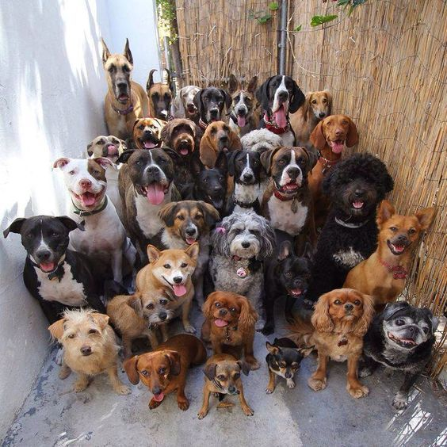
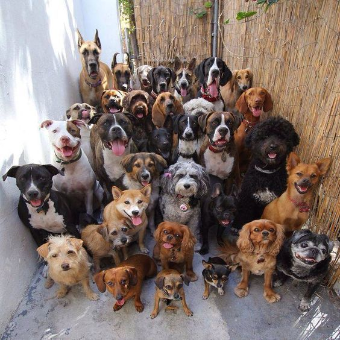
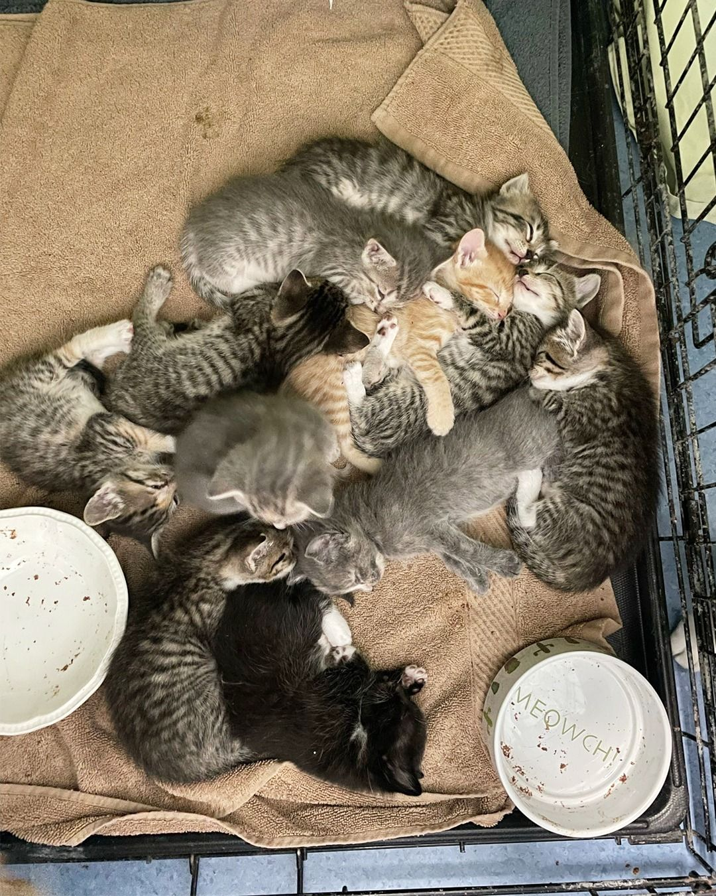
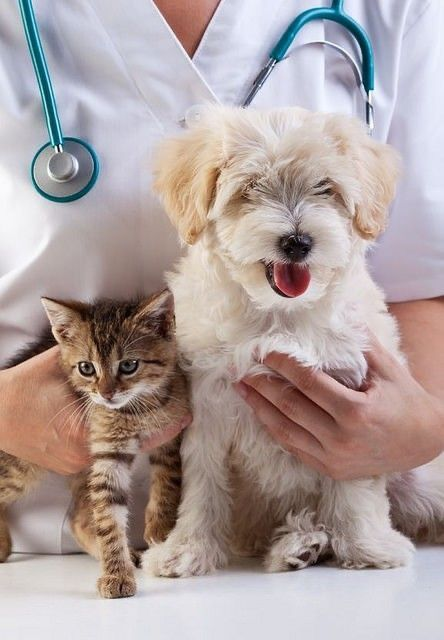
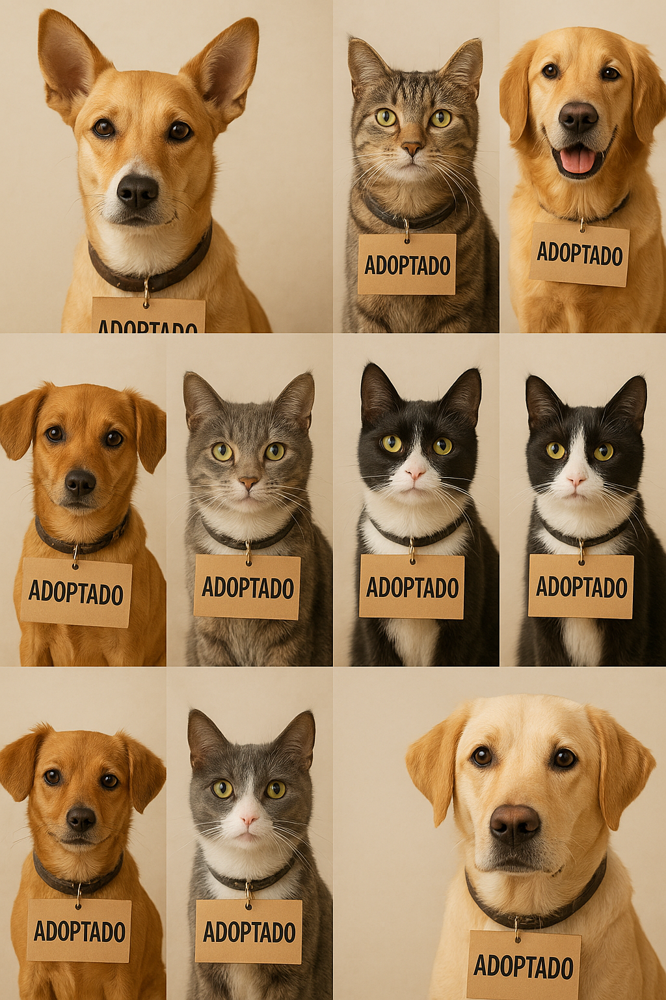

2018
Un pequeño grupo de amigos amantes de los animales decidió actuar ante el abandono que veía en su ciudad. Comenzaron con unas pocas casas de acogida para caninos y un refugio temporal
En Dejando Huella trabajamos cada día para ofrecer un hogar seguro y lleno de cariño a los animales abandonados o maltratados. Nuestra misión es rescatar, cuidar y facilitar la adopción responsable, promoviendo una convivencia respetuosa entre humanos y animales.
Nuestros valores:

Un pequeño grupo de amigos amantes de los animales decidió actuar ante el abandono que veía en su ciudad. Comenzaron con unas pocas casas de acogida para caninos y un refugio temporal
El pequeño grupo de amigos ya no era tan pequeño. Empezaron a crecer como grupoy expandieron su proyecto, consiguiendo encontrar un lugar mejor donde establecer el refugio, que les permitió tener más espacio, y con ello, les permitió comenzar con el rescate gatuno
Consiguieron aumentar la capacidad de rescate, crearon programas educativos en escuelas y comunidades locales, consiguieron más voluntarios y más adopciones y consiguieron un acuerdo de colaboración con una clínica veterinaria
Más de 500 es el número de animales que, desde entonces, han podido ser rescatados y adoptados. ¡Y el número solo va en aumento!
Desde nuestra apertura, hemos logrado: